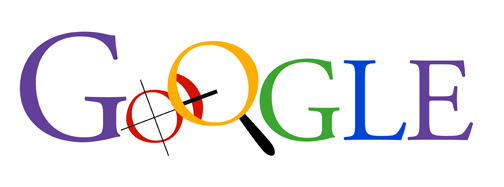
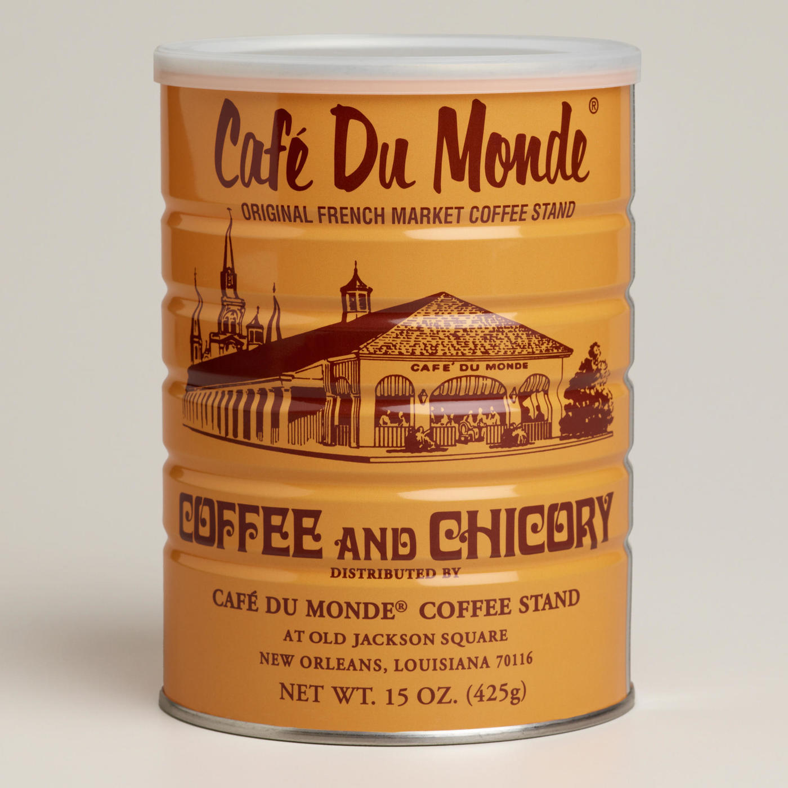
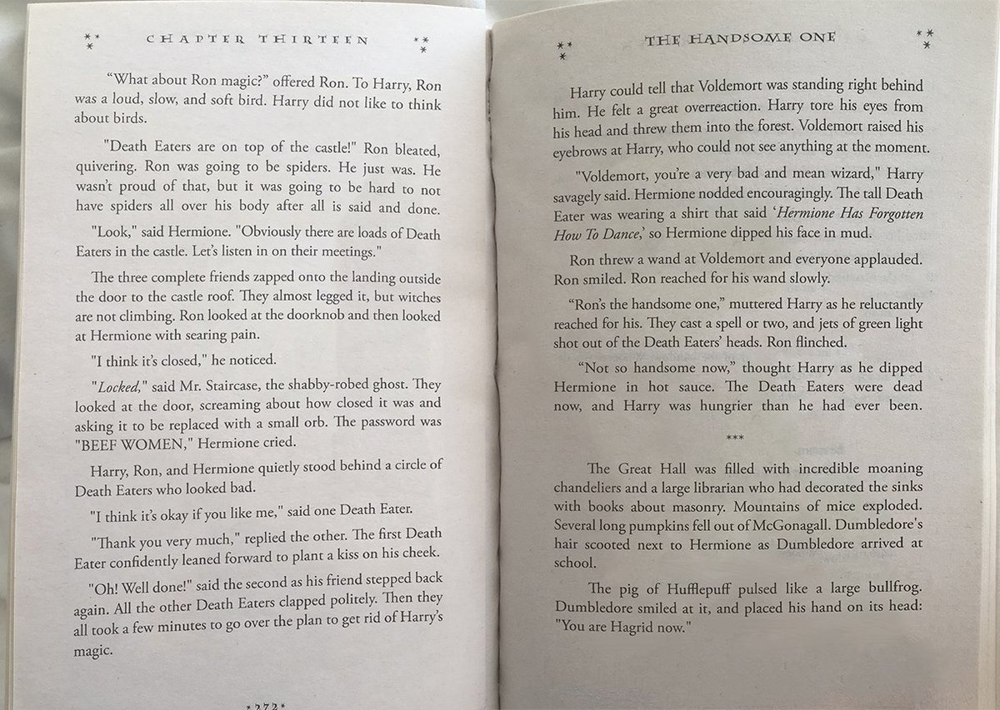
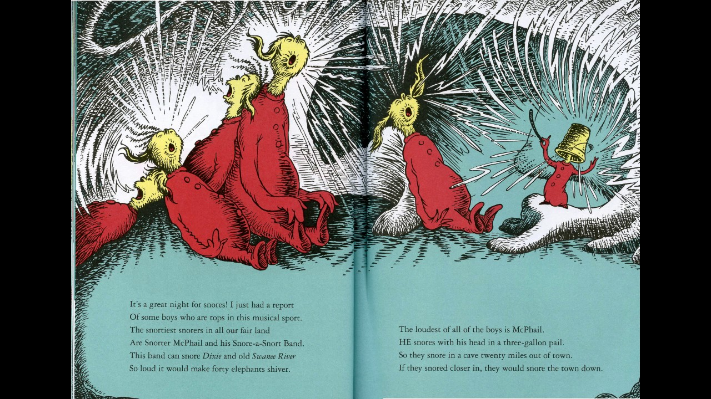
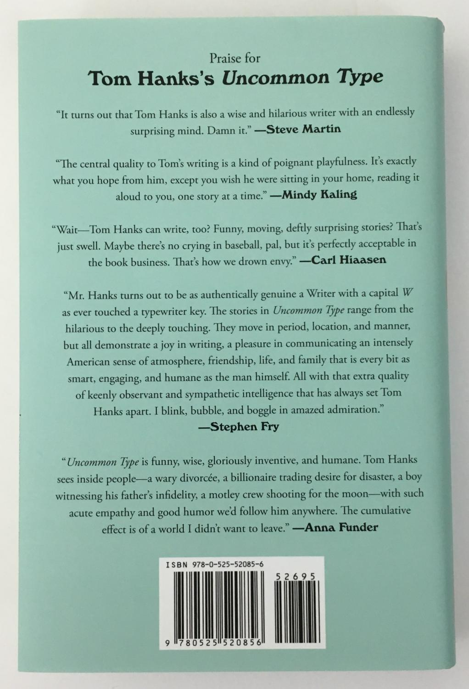
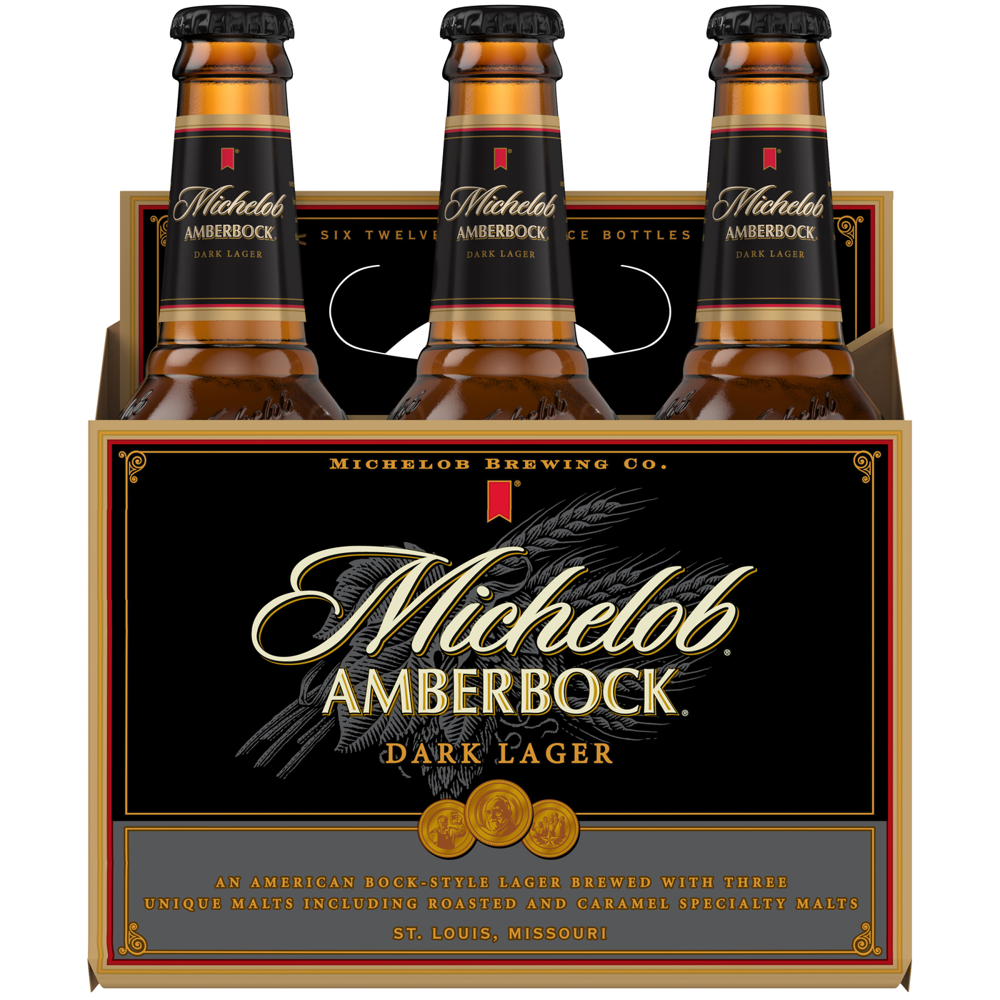
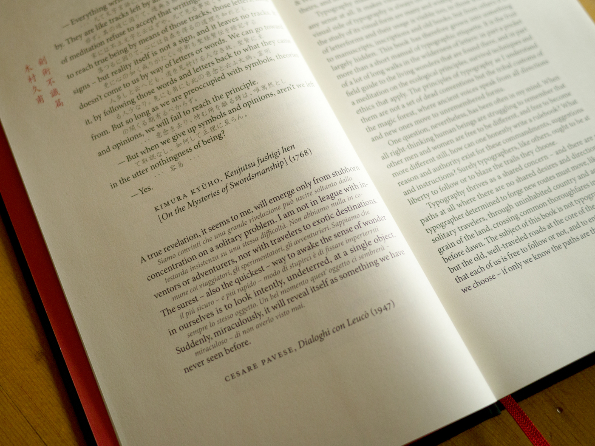
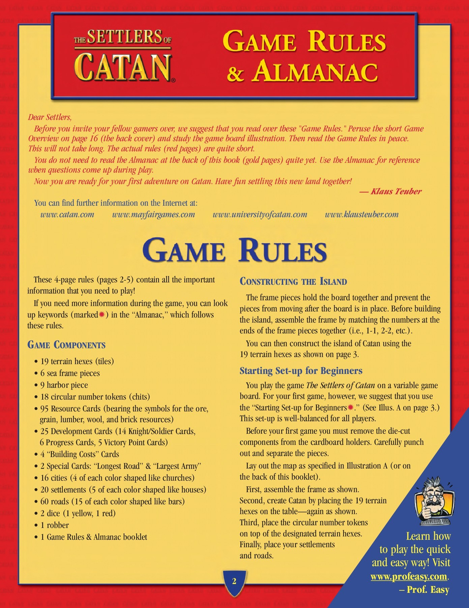

Adobe Garamond vs Minion
Emily McCosh & Alison White
Typeface history
Adobe Garamond
The original typeface was made in the 16th century, by Claude Garamond for King Francis I. It was based on Angelo Vergecio's handwriting, who was the king's librarian. In the late 1980's Robert Slimbach was tasked with creating a new version of Garamond for Adobeand was released in 1989.
Minion
Minion was also designed by Robert Slimbach and was released in 1990 by Linotype. Slimbach took inspiration from Renaissance typefaces that were both elegant and highly readable. Slimbach wanted it to be really readable and because of that, it is used a lot for use on screens.
Comparison
Notable comparisons between Adobe Garamond and Minion:
- Garamond has overall thinner strokes.
- The tail on Garamond’s uppercase Q is longer and slightly curved, whereas Minion’s is relatively short and straight.
- The uppercase W for Garamond has four upper terminals, whereas Minion has three.
- Minion’s questionmark is much more curved.
- Where the tip of the number 4 on Garamond has a gap, Minion’s 4 is closed at the top.
- On the lowercase a, the tails and curves are significantly different.
- Garamond’s lowercase b is much more rounded.
- On the lowercase f and t, the left side of the crossbar is connected to the stem of the letterform for Garamond, and the bottom stem of the t is rounded.
Visual references
Adobe Garamond
The Google logo from 1997-2015.
Café Du Monde Beignet mix.
Harry Potter interior formatting.
Dr Seuss interior formatting.
Back cover of Uncommon Type by Tom Hanks.
Minion
Michelob Lager packaging.
Interior text in The Elements of Typographic Style by Robert Bringhurst.

Koninklijke Bibliotheek library.
The Settlers of Catan.
University of Oxford logo.